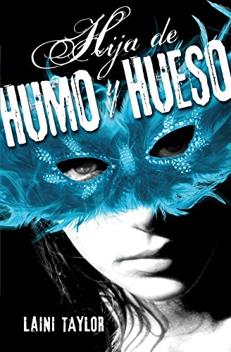
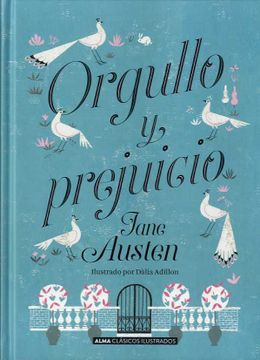
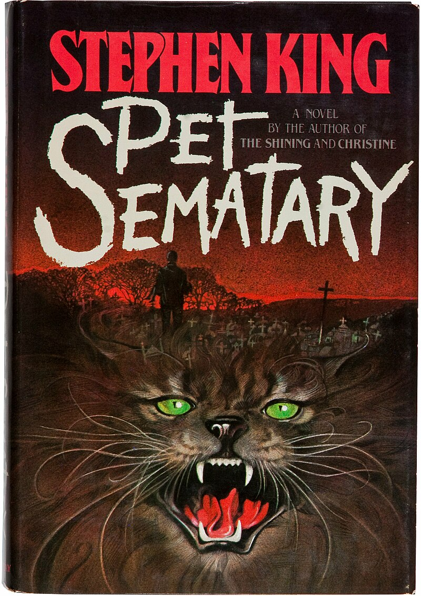
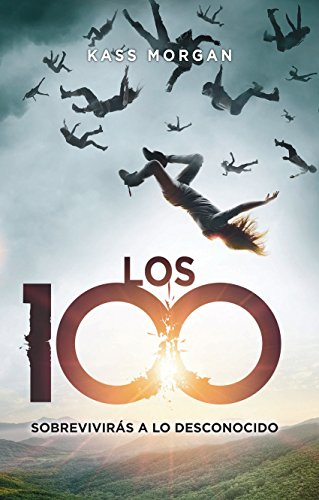
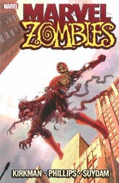

Rebooks
¡Hola! Bienvenidxs a otro rincón de mascotitas felices, edición "Rebooks". Cree esta página para poner reseñas de libros de diferentes géneros literarios que me han encantado a lo largo de mi vida y dar alguna que otra recomendación. Disfruten su paso en este, mi lugar de sueños <3.
Índice:
A continuación pondré las reseñas de algunos libros, al darle click a la portada de estos, los dirigirá a un página donde podrán comprarlo y tenerlo en físico o virtual.
FANTASÍA
Hija de Humo y Hueso - Laini Taylor
"Karou no podría ser más feliz: vive en Praga, donde estudia arte, tiene un apartamento para ella sola, los mejores amigos que pueda pedir y acaba de deshacerse de un novio infiel. También tiene un trabajo «secreto» que no puede contarle a nadie: trabaja para Brimstone, una quimera, mitad humana mitad animal, que posee una tienda de deseos, y cobra sus servicios en dientes. En sus viajes para Brimstone, Karou empieza a ver manos marcadas a fuego en las puertas que conectan nuestro mundo con la tienda de la quimera y muy pronto el peligro se acercará a ella en forma de un ángel llamado Akiva. Antes de abrir Hija de humo y hueso quizás pensemos que estamos ante otro ejemplo de romance paranormal juvenil de los que tanto abundan, pero a cada página que dejemos atrás veremos que no es así. Aunque Laini Taylor coge elementos que ya conocíamos, como los ángeles, éstos están muy lejos de la imagen de seres bondadosos y de gran pureza habituales. Como enemigos, la autora recurre a las quimeras, unos seres cuyo cuerpo es una mezcla de partes animales y humanas. Una guerra necesita combatientes, y los personajes que luchan en ella tienen un carácter fuerte y tenaz. Karou, la protagonista, es alegre y algo infantil a veces, y pone el contrapunto perfecto a la seriedad de Brimstone, la quimera dueña de la tienda de deseos. También disfrutaremos con Akiva, el ángel que va tras Karou y sus quimeras. Laini Taylor posee una forma de narrar muy buena y bonita, aunque en ocasiones nos encontraremos con diálogos que no están señalizados con los típicos guiones sino entre comillas. Al principio cuesta un poco leer algunas conversaciones de esta manera, pero enseguida te acostumbrarás a su prosa. Si tuviéramos que señalar algo negativo sobre la obra, sería el abrupto cambio de dirección que toma la trama hacia la mitad del libro. Si bien es necesario para la historia, se siente como si no encajara del todo y desluce un poco el resultado final. Aún con los pros y los contras, Hija de humo y hueso (cuya segunda parte, Days of Blood and Starlight, saldrá en noviembre de este año) destaca dentro de su género. Tiene una ambientación coherente, el comportamiento de Karou es acorde a su carácter y los personajes no se agrupan en «buenos» o «malos», pues la guerra que enfrenta a estos dos pueblos tiene más matices que el siempre negro y blanco".
NOVELAS ROMÁNTICAS
Orgullo y Prejuicio - Jane Austen
"La novela describe un periodo de más de un año en la vida de un grupo de jóvenes que vive en el campo cerca de Londres en el cambio de siglo (del XVIII al XIX), durante el reinado de Jorge III. El acaudalado señor Charles Bingley dueño de una irresistible fortuna se han instalado en la finca Netherfield junto a sus dos hermanas y su cuñado. Le acompaña su amigo, el atractivo, arrogante, vanidoso y egoísta Fitzwilliam Darcy. Al menos eso es lo que piensa Elizabeth Bennet cuando, en el baile público del pueblo de Meryton, le escucha comentar con sus compañeros que prefiere no sacarla a bailar porque no la considera suficientemente hermosa. Bingley, el soltero de oro se convierte en un especimen codiciado para toda madre de cualquier joven que se encuentre en edad casadera y, afortunadamente, Charles parece interesado por Jane, la mayor y más bonita de las hermanas Bennet. La presencia de Charles representa la única esperanza para solucionar parte de los problemas de la familia. La familia Bennet tiene cinco hijas casaderas, de entre quince y veintitrés años (Jane, Elizabeth, Mary, Catherine y Lydia). La señora Bennet ve el matrimonio como una salvación para sus hijas, ya que a la muerte del señor Bennet, las jóvenes quedarán abandonadas a su suerte cuando William Collins, primo de las muchachas, herede todo debido a que la propiedad forma parte de un mayorazgo del que es beneficiario. El mayorazgo solo se transmite por linaje masculino, de manera que, al fallecimiento del padre, la madre y las hijas perderán la mayor parte de la fortuna y el derecho a habitar la propiedad. Orgullo y prejuicio de Jane Austen es un retrato y una crítica social del mundo en el que vivió Jane Austen. La diferencia de clases en la Inglaterra victoriana, la exagerada dependencia de la mujer hacia el hombre, la falta de independencia femenina, la brutal presión del matrimonio y las dificultades económicas y sociales a las que tiene que hacer frente el amor son algunos de los temas que trata la obra".
TERROR
Cementerio de Animales - Stephen King
"Louis Creed, un buen médico, se instala en una hermosa casa en Ludlow junto con su esposa, Rachel y sus dos hijos, Ellie y Gage. Sin embargo, no todo es tan hermoso como parece, pues al lado de las casas de Louis y Jud se encuentra una peligrosísima carretera por la que circulan camiones durante todo el día y toda la noche. Todo era normal hasta que, llevado por su vecino, conoce un misterioso cementerio de mascotas cuyo cartel, pintado por lo niños de la ciudad dice «Pet Sematary» que se encuentra atravesando un camino detrás de su patio. Un antiguo cementerio que los niños y adolescentes del pueblo utilizan para sepultar a sus queridas mascotas, las cuales fallecían de diferentes maneras (la mayoría arrolladas en la carretera por los camiones) y en donde se realizan enterramientos desde muchísimos años. Mientras trabaja en la universidad de medicina, un joven universitario llamado Víctor Pascow es llevado de urgencia allí a causa de un accidente de tránsito. Su cuerpo está destrozado, el líquido cefalorraquídeo, sangre y otras sustancias caen de él. En su lecho de muerte, el joven le recomienda alejarse del cementerio de animales y de lo que existe más allá de este, pues las consecuencias podrían ser devastadoras. Dado el mensaje, ocurre lo esperado, su muerte. Esa misma noche, el espíritu de Pascow visita a Louis y lo lleva al cementerio de animales, para decirle que no pase por ahí, tras lo cual Louis tiene la sensación de que los troncos de la cerca se convierten en huesos. Tras esto, varios días después, ocurre la muerte del gato de Ellie, Church. Jud ofrece enterrar al gato en un cementerio cercano al de animales, recorriendo un largo camino hacia arriba termina llevándolo a un antiguo cementerio que pertenecía a los indios Micmac, donde convence a Louis de sepultar el cadáver del gato. En ese momento Jud no da mucha más explicación a Louis, sólo que el entierro debe hacerlo este último porque "cada quien debe enterrar a los suyos" a pesar de la confusión y protestas del médico, cuyas protestas tenían como motivo la lejana ubicación del cementerio, con dificultad lo entierra. Al día siguiente, el gato regresa de entre los muertos, siendo maloliente, agresivo y torpe. Louis queda impactado al verlo sobre la escalera y acude a la casa de Jud para hablar de lo ocurrido. Este le explica que las tierras de más allá del cementerio de mascotas eran sagradas y mágicas para los amerindios de la zona. En esas tierras se creó un cementerio donde se enterraban seres queridos que habían fallecido, devolviéndolos a la vida".
CIENCIA FICCIÓN
Los 100: Sobrevivirás a lo desconocido - Kass Morgan
"Después de que algo terrible sucede en el planeta Tierra, este queda inhabitable por muchísimo tiempo. Algunas personas pudieron sobrevivir... en el espacio. Ahora, muchos años después de estos eventos que dejaron a la Tierra despojada de la raza humana, 100 delincuentes juveniles son enviados en una peligrosa misión: saber si la Tierra, más precisamente la atmósfera terrestre, es tóxica. La historia está narrada desde cuatro puntos de vista: Clarke, Bellamy, Glass y Wells. Los cuatro personajes son muy diferentes, pero los cuatro tienen algo en común: harían cualquier cosa para salvar a las personas que más quieren. Clarke carga con muchas culpas que le pertenecen y otras muchas que no. Su historia plantea una pregunta que es muy polémica hoy: ¿es más humano dejar que una persona sufra o acabar su sufrimiento aunque eso implique su muerte? Clarke es valiente, sin duda, pero también frágil y con demasiados fantasmas que debe llevar sola. Wells solo desea estar con Clarke y está dispuesto a lo que sea con tal de protegerla y que ella le perdone. En mi opinión, Wells depende en exceso de Clarke rozando la dependencia emocional. Es cierto que, en parte, la actitud de Wells se debe a que se siente culpable de todo lo que ha sufrido Clarke. A sus ojos, y a los de la persona a la que más ama, él es el culpable de toda la desgracia que rodea a Clarke. Bellamy solo quiere proteger a su hermana, Octavia. Le da igual quien caiga con tal de que su hermana esté a salvo de todos los peligros que acechan en la colonia espacial. Bellamy es mi personaje favorito con diferencia de la novela (y de la serie) por su sentido del deber, el amor que siente por Octavia y su lealtad a sus seres queridos. Bellamy parece ser el típico chulito de clase baja que trata fatal a todas las mujeres que le rodean, pero para nada. Su actitud no es más que una pose para que no le hagan más daño del que le han hecho, pero en el fondo solo quiere sobrevivir y que su hermana sea feliz. Glass es la última en este cuarteto. Chica de clase alta en la colonia espacial que se enamora de chico de clase baja. Típica historia de amor prohibido, pero con un ligero toque de drama y una gran crítica social detrás".
MISTERIO
El Psicoanalista - John Katzenbach
"La historia pone a prueba la capacidad del protagonista para evitar su suicidio frente a la presión de un desconocido. Destaca por el realismo psicológico de sus personajes y la capacidad de establecer una trama intrigante. Feliz 53 cumpleaños, doctor. Bienvenido al primer día de su muerte. Pertenezco a algún momento de su pasado. Usted arruinó mi vida. Quizá no sepa cómo, por qué o cuándo, pero lo hizo. Llenó todos mis instantes de desastre y tristeza. Arruinó mi vida. Y ahora estoy decidido a arruinar la suya. Así comienza la carta que recibió el doctor Frederick (Ricky) Starks, un psicoanalista estadounidense, el día de su 53º aniversario. El remitente de la carta es un psicópata que firma como Rumplestiltskin (Sr. R) y que al parecer conoce la vida rutinaria del Dr. Starks. Rumplestiltskin le da un plazo de 15 días para descubrir su identidad o de lo contrario tendrá dos opciones: suicidarse o permitir que destruyan la vida a algún familiar que está incluido en la carta. Lo único que sabe es que la causa de tales amenazas es la venganza por algún acontecimiento pasado que Ricky no recuerda. Las normas del juego incluyen no avisar a la policía y formular preguntas en el periódico; las cuales Rumplestiltskin responderá por el mismo medio. Cuando decide contactar con aquellos familiares que aparecen como posibles víctimas, con los que lleva años sin tener trato, Ricky descubre que la hija adolescente de uno de sus sobrinos ha recibido amenazas en su taquilla del instituto, donde encontró fotografías pornográficas en las que aparecían escritos amenazadores. Por si fuera poco, recibe la visita de una atractiva mujer que se hace llamar Virgil y quien es una ayudante de Rumplestiltskin. Le dice que su jefe le ha enviado para que realice el papel de Virgilio y le guíe hasta el infierno. Ricky le echa del despacho, mientras todavía piensa qué debe hacer: si tomar en serio la amenaza del psicópata o no. Pero, ocurren acontecimientos que le obligan a temer por su vida. Primero, el aparente suicidio de Roger Zimmermann, uno de sus pacientes, al lanzarse a las vías del metro y dejar nota de suicidio en la que culpa a su psicoanalista. Segundo, que una antigua paciente ha presentado una denuncia ante el colegio de psicoanalistas en la que culpa al Doctor Frederick Starks de violarla durante sus sesiones. Tercero, que en su nombre han cancelado todas sus cuentas bancarias y le han dejado en bancarrota. El Dr. Starks trata por todos los medios de descubrir la identidad de su amenazador. Después de una serie de acontecimientos que amenazan y a la vez confunden a Ricky, divagando en el tiempo, y casi al final del plazo puesto por Rumplestiltskin, Ricky Starks descubre que Rumplestiltskin es uno de los tres hijos de Claire Tyson, una antigua paciente que tuvo cuando él trabajaba en una clínica 20 años atrás, antes de poner su consultorio privado y dedicarse a atender a gente que tenía los medios económicos para tomar las sesiones. Claire Tyson fue atendida durante 4 sesiones. Nunca llegó a tomar la 5.ª sesión, algo de Ricky paso por inadvertido, 15 días después de haberla tratado, la mujer se suicidó, cuando Rumplestiltskin era tan solo un niño. Ahora el Sr. R convertido en un adulto poderoso, decide vengar la muerte de su madre, creyendo que con el no haber apoyado a su madre, destruyeron su vida llevándola al suicidio así que comienza un largo camino destruyendo la vida de todos aquellos que alguna vez le dieron la espalda. El Dr. Starks es sólo una víctima más de una venganza maestra".
CÓMICS
Marvel Zombies - Kirkman·Phillips·Suydam
"Comienza justo después de lo ocurrido en Ultimate Fantastic Four, Magneto logra destruir el tele-transportador y en ese momento una horda de superhéroes zombies comienza a perseguirlo por toda la ciudad destruida, usando su poder de magnetismo logra hacer frente a algunos de ellos, en eso el Coronel America trata de frenar a Magneto usando su escudo pero Magneto haciendo gala de su poder revierte el trayecto y termina por cercenar el cráneo del Coronel América; Luego, utilizando el propio escudo como arma, continua atacando a zombies como a Thor, Hawkeye, entre otros zombies que tratan de comérselo. Magneto comienza a debilitarse por las luchas hasta que, aprovechándose de su imperceptible estatura, la Avispa lo ataca por atrás mordiéndole el cuello, estando caído y malherido aparece Hulk y otros zombies devorádonlo en el acto. Después de haber devorado a Magneto el grupo de zombies (destacando de entre ellos el Hombre Araña, Bruce Banner, Luke Cage, Giant Man, Iron Man, entre otros) reposan en una de las calles destruidas cuando de pronto aparece entre ellos el Silver Surfer, el cual hace su llegada a la Tierra para informar a los zombies que su maestro Galactus está en camino a devorar el planeta. Los zombies ven un buen aperitivo a devorar y lo comienzan a atacar; usando su poder cósmico logra destruir con facilidad y dejar fuera de combate a varios zombies, Thor rompe su martillo divino en la cabeza del Silver Surfer para que este caiga al suelo, a pesar del daño pone resistencia y lucha valientemente pero es asesinado por Hulk, quien de un solo bocado se come la cabeza del Silver Surfer, el resto del cuerpo es devorado por el resto de los héroes zombies. Todos los que se alimentaron del Silver Surfer, adquieren parte de la energía cósmica. Luego de ello Giant Man se dirige a su laboratorio en donde tenía sedado a Pantera Negra, el cual tenia uno de sus brazos amputado, debido a que Giant Man lo consideraba como una provisión para devorarlo parte por parte en caso de que no encontrase carne que comer, cuando termino de cercenar una de sus piernas con un instrumento quirúrgico aparece la Avispa y tienen una discusión que termina en una pelea en la cual Giant Man destroza el cuerpo de la Avispa, cuando voltea a la camilla se da cuenta que Pantera Negra no está y ha escapado por lo que se dispone a cazarlo. En ello aparece Pantera Negra, que había estado escondido en el laboratorio, y se da cuenta que la cabeza de Avispa aun está viva para lo cual la toma y busca ir a otro sitio más seguro. Es en ese contexto en que Galactus hace su llegada a la Tierra y al ver que su heraldo fue asesinado por los zombies se enfurece y dice que no tendrá piedad, a pesar que es atacado por los zombies, este fácilmente los repele. Mientras tanto, Pantera Negra se encuentra con un grupo de humanos sobrevivientes provenientes del Asteroide M los cuales venían en búsqueda de Magneto, debido a que el abandono el asteroide en el que se encontraba para ayudar a combatir junto con los héroes sobrevivientes en contra de los zombies en la tierra, perdiendo luego todo contacto con él. Dicho grupo se disponía a matarlo pensando que era un zombie pero a pesar de que lograron darse cuenta de que no lo era, uno de ellos igual quiso matarlo por lo que Pantera Negra le arroja la cabeza de Avispa para que este termine siendo devorado por ella. Luego deciden que la tierra ya no puede ser salvada, luego regresan al espacio todos juntos. En otro lado de lado de la ciudad, Iron Man, y Bruce Banner crean un dispositivo que amplían las habilidades adquiridas del Silver Surfer, por ello todos los zombies que lo devoraron reúnen el poder cósmico adquirido en la máquina amplificadora y disparan el rayo amplificador con lo que son capaces de herir considerablemente a Galactus. Luego se crea una disputa entre los supervillanos zombies y los superhéroes zombies para ver quienes van a devorar a una preciada presa de caza como Galactus, destacan algunas luchas como la de Wolverine y Juggernaut, la cual termino con Juggernaut siendo decapitado por el poder cósmico que tenia Wolverine, a pesar que sólo tenía un brazo; la lucha de Venom contra el Hombre Araña, que termina con el abandono del traje negro (simbionte) a un Eddie Brock que fue perforado por uno de los rayos cósmicos de Spider Man y la del Coronel America con su viejo rival Red Skull, en esta lucha se da la muerte del Coronel a manos de este último. Después de la encarnizada lucha el grupo de héroes zombies logra vencer a sus rivales y a pesar de que Galactus aún esta consciente y pretende poner resistencia, su cuerpo está demasiado debilitado, luego comienza a ser devorado lentamente".
Libros que se volvieron películas:
Cada título te redirigirá al lugar donde puedes comprar el libro y cada película la podrás encontrar con el mismo nombre en las plataformas de streming más famosas
- Los Juegos del Hambre - Suzanne Collins
- Trilogía El Señor de los Anillos - J.R.R Tolkien
- Drácula - Bram Stoker
- Las Ventajas de Ser Invisible - Stephen Chbosky
- Cartas a Julieta - Gonzalo Arango
Al dar click en la imagen te llevará a una playlist de Spotify que recomiendan escuchar Chip y Kai mientras leen :)